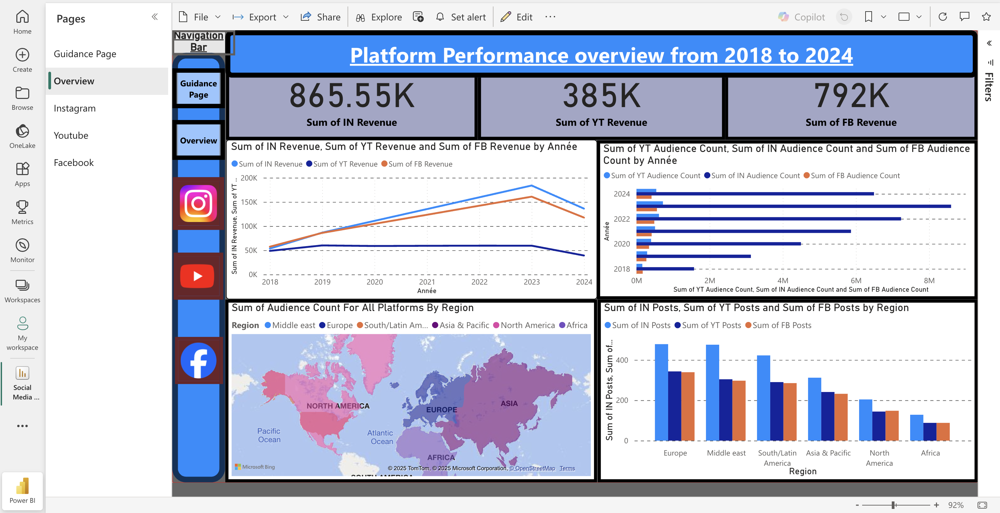

Projects/Experience
- Python for Data Analysis
- Power BI for Data Visualization
- Website Design (HTML, CSS, JavaScript)
During my summer internship at BNY (Bank of New York)—the largest custodian bank in the world—I worked within the UK Income team, where I was introduced to the core processes of authorising cheque payments and handling client distributions. This hands-on role provided valuable insight into financial operations and broadened my understanding of investment servicing. I also had the opportunity to network with professionals across various departments and strengthen my knowledge of the global financial ecosystem. At the end of the internship, I delivered a project on mandate and cheque automation, which was well-received by senior managers and directors, showcasing my initiative and analytical approach.
I created a dashboard showcasing to the user the performance of three big social media companies which include Instagram, YouTube and Facebook, allowing for informed decision making and performance tracking. These insights include details such as revenue over time, sums of total engagement, audience count by region, and more. Each dashboard tab incorporates the themes and business branding colours related to the platform displayed to make the user interface more familiar to the user. There is also a navigation bar on the left-hand side which helps with the user experience (UX) of the dashboard design and improves functionality.
View Full Interactive Power BI Dashboard
At the top of each page in my dashboard you will see a title clearly stating what the page is about and below that there will be a row of numerical cards which display key performance indicators (KPI’s). These contain things that the stakeholders of the company would find the most important as they include things like revenue and overall engagement.